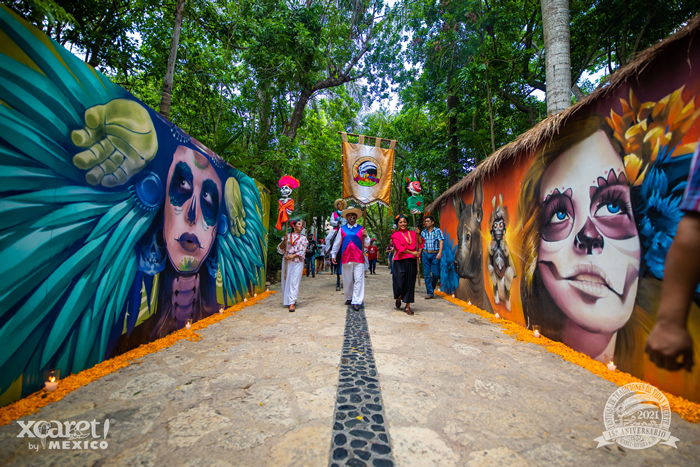
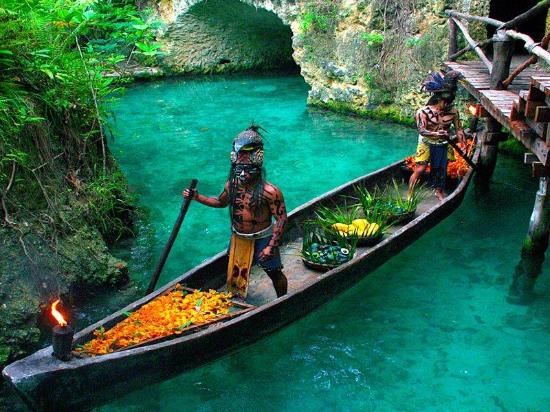

Una de las actividades principales del parque es la promoción de la riqueza cultural de México. Para este fin cuenta con un programa de eventos que se realizan todos los días. Entre ellos destaca la celebración 'México Espectacular'. Dividido en dos partes, este espectáculo es un recorrido por la historia y lo más destacado del folclore mexicano.
La primera parte del espectáculo describe vívidamente el México Precolombino e incluye una interpretación del ancestral juego de pelota prehispánico, practicado en más de 500 campos en Mesoamérica. La segunda es un mosaico de bailables y estampas de distintas regiones del país: Yucatán, Oaxaca, Tabasco, Veracruz, Michoacán, Jalisco, entre otros.
El sonoro zapateo, la picardía del cortejo y de las historias de amor, la alegría de los mariachis y la audacia de los charros que exhiben a caballo las suertes del floreo trasladan a los espectadores a los diferentes estados de México. Además, Xcaret cuenta con la reproducción de un pueblo maya y un cementerio maya, donde se realiza el festival de vida y muerte a principios de noviembre. Otros eventos culturales son la fiesta charra, el ritual de los voladores de Papantla y el desfile de trajes típicos.
Durante el mes de mayo, en Xcaret se realiza también la travesía sagrada maya, una representación de la peregrinación que los mayas realizaban de la antigua Polé a Cuzamil para consultar el oráculo y adorar a Ix Chel. Esta representación busca ser lo más cercana a la que originalmente realizaban los mayas; por ello, los participantes cruzan en grupos de 4 personas en balsas muy sencillas usando remos de madera y vistiendo ropas alegorícas a la época. Si el clima es favorable les toma alrededor de 4 horas cruzar de Xcaret a Cozumel. Para poder participar, los interesados se inscriben con varios meses de anticipación y deben acudir a un entrenamiento que los prepara para el esfuerzo físico que implica el trayecto. En Xcaret se encuentra también la representación de una hacienda henequenera, una típica construcción de la Península de Yucatán, así como una cava donde se encuentra una exclusiva colección de vinos mexicanos.